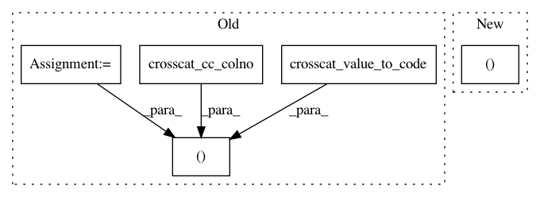

e83bc935a8b701d1d38bd1dc2b8a3fd14a9cdecf,src/metamodels/crosscat.py,CrosscatMetamodel,row_column_predictive_probability,#CrosscatMetamodel#Any#Any#Any#Any#Any#,1158
Before Change
value = row[0]
if value is None:
return None
code = crosscat_value_to_code(bdb, generator_id, M_c, colno, value)
cc_colno = crosscat_cc_colno(bdb, generator_id, colno)
X_L_list = self._crosscat_latent_state(bdb, generator_id, modelno)
X_D_list = self._crosscat_latent_data(bdb, generator_id, modelno)
row_id, X_L_list, X_D_list = \
self._crosscat_get_row(bdb, generator_id, rowid, X_L_list,
X_D_list)
r = self._crosscat.simple_predictive_probability_multistate(
M_c=M_c,
X_L_list=X_L_list,
X_D_list=X_D_list,
Y=[],
Q=[(row_id, cc_colno, code)],
)
return math.exp(r)
After Change
if value is None:
return None
r = self.logpdf_joint(
bdb, generator_id, [(rowid, colno, value)], [], modelno)
return math.exp(r)
def predict_confidence(self, bdb, generator_id, modelno, colno, rowid,
In pattern: SUPERPATTERN
Frequency: 3
Non-data size: 5
Instances
Project Name: probcomp/bayeslite
Commit Name: e83bc935a8b701d1d38bd1dc2b8a3fd14a9cdecf
Time: 2015-10-20
Author: axch@mit.edu
File Name: src/metamodels/crosscat.py
Class Name: CrosscatMetamodel
Method Name: row_column_predictive_probability
Project Name: probcomp/bayeslite
Commit Name: c3985e609d25096f9b920613c7e3009950778326
Time: 2015-10-20
Author: axch@mit.edu
File Name: src/metamodels/crosscat.py
Class Name: CrosscatMetamodel
Method Name: simulate_joint_many
Project Name: probcomp/bayeslite
Commit Name: 7b0cdca50cb7e757723363ea17eb27dc47f1ba59
Time: 2015-10-20
Author: axch@mit.edu
File Name: src/metamodels/crosscat.py
Class Name: CrosscatMetamodel
Method Name: column_value_probability